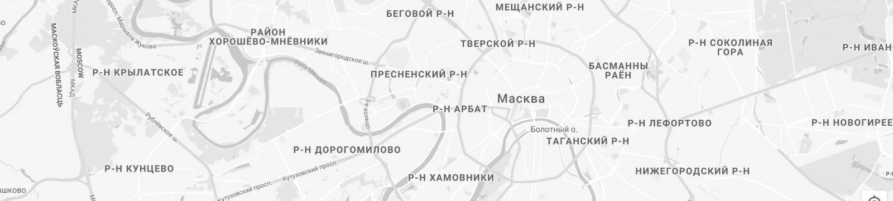

@@include('../blocks/favicon/favicon.html')
@@include('../blocks/header-inside/header-inside.html')
Контакты
@@include('../blocks/breadcrumbs/breadcrumbs.html')
@@include('../blocks/contacts/contacts.html')

@@include('../blocks/consultation/consultation.html')
@@include('../blocks/footer/footer.html')
@@include('../blocks/popup/popup.html')